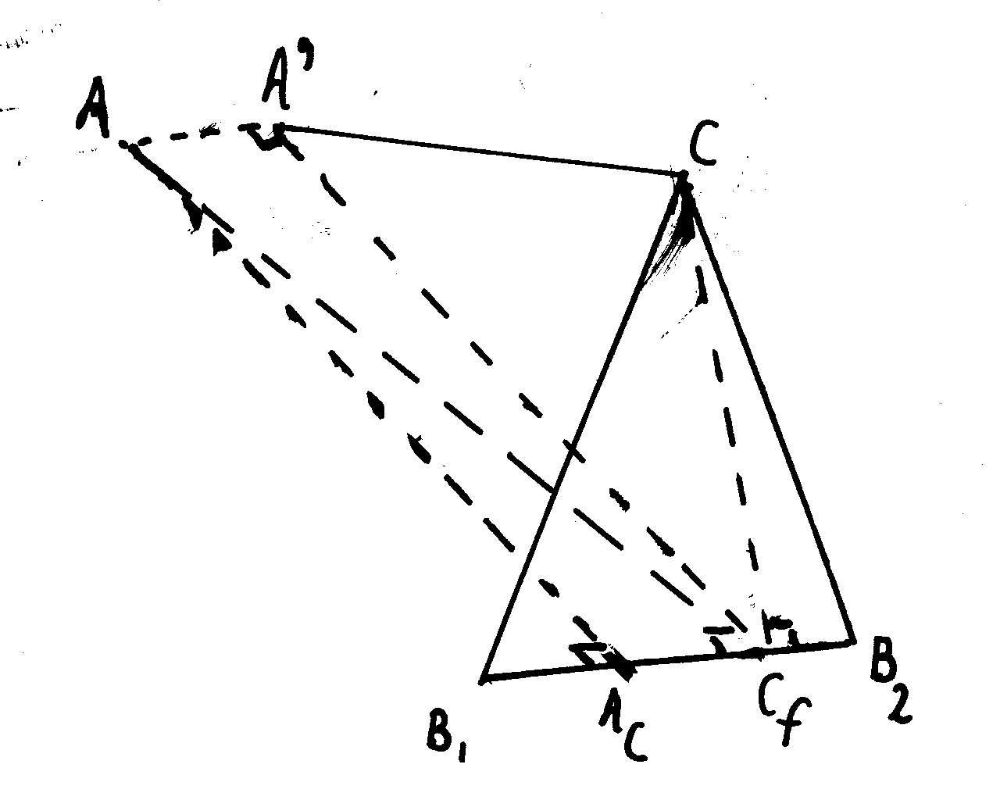

One of my friends has done research on medical robots that could position a needle.
( Vincent Groenhuis PhD: Robotic systems for breast biopsy
using MRI and ultrasound imaging, ISBN: 978-90-365-4892-2
In one of the models, called "Stormram 1", the position of the needle depends on the lengths of 5 pistons, stemming from points B1 till \(B_5\).
In his thesis (to obtain his PhD), he hints at a method to calculate the positions of \(A\) and C.
I took up the challenge to work this calculation out, and test its convergence. That could save the purchase of a Matlab licence!
Also, Vincent Groenhuis states, among possible explanations for the deviation from experiment: misalignment of points \(\vec B\) and \(\vec D\) .
(paragraf 6.6, page 121). This happens when \(\vec D\) rotates around axis AC. Such a rotation should happen because torsion in the beam J5 (from \(B_5\) to D) should align axis J14 with axis J13 in the picture below. My model calculates exactly this misalignment.
(click on the picture to rotate it - note that the orientation of the axes is taken from fig. 6.7)
The idea is:
if we know the distance \(B_5A\), we can calculate the position of \(\vec A\).
We know the distance \(AC\), so then we can calculate the position of \(\vec C\).
\(\vec B\) is between \(\vec A\) and \(\vec C\), and \(\vec D\) is at a fixed distance from \(\vec A\) and from \(\vec B\). \(\vec D\) may turn around the axis \(\vec A - \vec C\) such that \(\hat J_{14}\) is parallel to \(\hat J_{13}\). A change in \(\vec D\) has a small effect on the distance \(B_5A\).
The solution will be to make a guess for \(B_5A\), and then:
- calculate \(\vec A\)
- calculate \(\vec C\) (and \(\vec B\))
- estimate \(\vec D\)
- calculate the orientation of \(\hat J_{15}\)
- improve our estimate for \(\vec D\)
- calculate the angles of the triangle \(\triangle ADB_5\)
- improve our estimate for \(B_5A\)
- repeat...
This sounds like an vicious circle.
Actually, it is not a circle but a spiral: after each round, I will be nearer to the solution (in mathematical terms: the calculation converges to the solution).
The reason is that:
- a change in \(B_5A\) causes a smaller change in the angles
- a change in the angles causes a smaller change in the distances \(B_5A\)
So in each round, the solution will change a bit, but it will change less at each round.
And when the calculations don't change in the first 3 digits after the comma, I consider the solution ready.
improving my estimate for \(B_5A\)
\(\vec B_5\) is fixed, and I have estimates for \(\vec A\) and \(\vec D\) (I label the estimates after \(n+1\) iterations \(\vec A_n\) and \(\vec D_n\)). From the lengths of the sides, I calculate \(cos (\beta)\) and \(cos( \gamma\)) (using the cosine rule).
I know the distance \(AD\), and I know what \(B_5D\) should be. I use this value in \[(B_5A)_{n+1} = (AD)cos(\gamma_{n})+ (B_5D) cos(\beta_n)\]
Here, \( (B_5A)_n\) is my estimate for \(B_5A\) used at iteration \(n\).
In the picture, this corresponds to the distance \(A_nD_{n,f} + D_{n,f}'B_5\).
The angles \(\beta\) and \(\gamma\) don't change much between iterations, so this calculation provides an excellent estimate.
calculation of \(\vec A\)
The distances to \(\vec A\) from \(\vec B_3 \) and \(\vec B_4 \) are given, the positions of \( \vec B_3 \) and \( \vec B_4 \) also.
Using the cosine rule, I can calculate \(\vec A_f\), the "foot" of \(\vec A\). (A line from the foot to \(\vec A\) is perpendicular to the axis \(\vec B_4 - \vec B_3 \).)
Pythagoras's theorem then tells me the distance (\(h_A\), \(h\) for "height") from \(\vec A\) to \(\vec{A_f}\) .
I want to calculate an angle around the axis \(\vec B_4 - \vec B_3 \), so I create the triangle \(\triangle B_5'AA_f\) in a plane that is perpendicular to the axis. The vector from \(\vec B_5\) to \(\vec {B_5'}\) is the same as from \(\vec B_A\) to \(\vec A_f\), and equals the component of \(\vec A_f-\vec B_5\) along \( \vec B_4 - \vec B_3 \).
And Pythagoras tells us that \(B_5'A^2 = BA^2 - BB_5'^2\), so I know the lengths of all sides of \(\triangle AA_fB_5'\).
Then I apply the cosine rule to calculate the cosine of the angle at \(\vec A_f\).
I suppose that the sine will be positive, so \( sin(\alpha_f) = \sqrt{1-cos^2(\alpha_f)}\).
I measure the cosine along an unit vector \(\hat e_\parallel\), which is defined by the vector from \(\vec A_f\) to \(\vec B_5'\).
For the sine, I define a unit vector \(\hat e_\perp\) that is perpendicular to this vector, but still in the plane of \(\triangle B_5'AA_f\). Therefor, I take the outer product of \(\vec A_f - \vec B_5'\) and \(\vec B_4 - \vec B_3\).
Then \(\vec A = \vec{A_f} + h_A cos(\alpha)\hat e_\parallel + h_A sin(\alpha) \hat e_\perp\)
Note that I don't calculate angles with respect to an \(x\), \(y\) or \(z\) axis, but with respect to \(\vec{A_f} - \vec{B_5'}\), so \(\vec B_5\) does not have to lie in the \(xz\)-plane.
calculation of \(\vec C\)

This is really similar, as the drawing shows. Instead of the axis \(\vec B_4 - \vec B_3 \), I take \(\vec B_1 - \vec B_2 \). This ensures the correct orientation of \(\hat e_\perp\) (upward). Of course, at each iteration, the positions of \(\vec A\) and \(\vec A'\) may change.
calculation of \(\vec B\)
\(\vec B\) is simply on the line between \(\vec A\) and \(\vec C\), at a fixed distance:
\(\vec B = (1-\lambda) \vec A + \lambda \vec C\) with \(\lambda = (AB/AC)\)
estimation of \(\vec D\)
For the first iteration, I suppose that \(\vec D\) is straight under \(\vec B\).
At later iterations, I will use the orientation of \(\hat J_{15}\) from the previous iteration.
calculation of \(\hat J_{15}\) and \(\vec D\)
Look at picture 7.7. I calculate the axis \(\hat J_{13}\) from the outer product \( (\vec B_2 - \vec B_1) \times (\vec D -\vec B_5) \).
Then \(\hat J_{15} = \hat J_{13} \times {(\vec A - \vec C) \over (AC)}\).
And then \(\vec D - \vec B = {DB\over AB} {(\vec A - \vec B)} \times \hat J_{15}\)
This value is used to calculate \(\vec D\), and also to estimate \(\vec D\) in the next iteration.